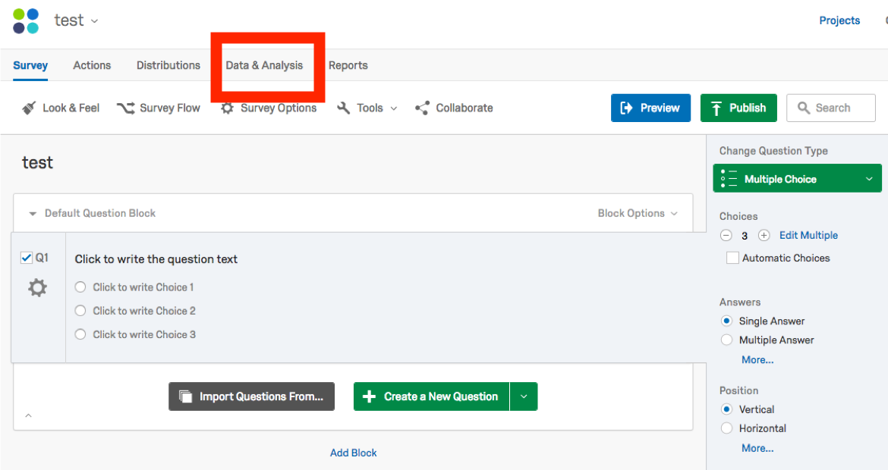
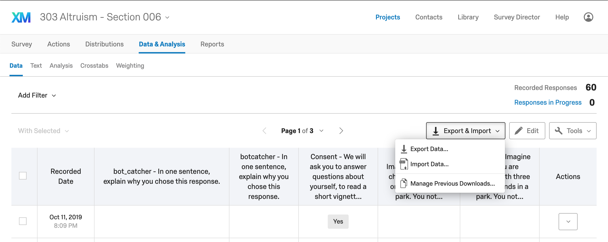
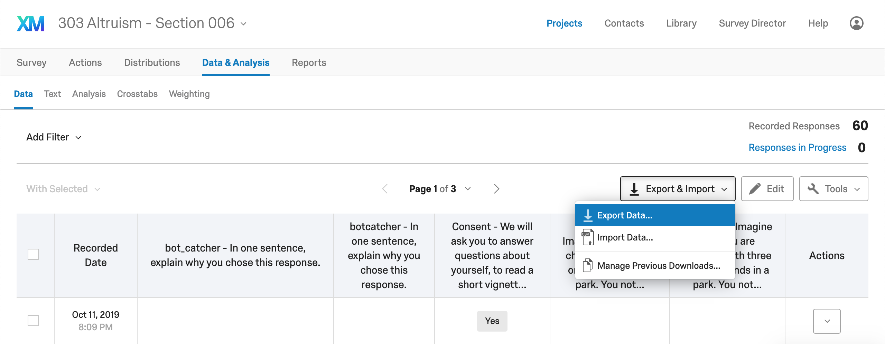
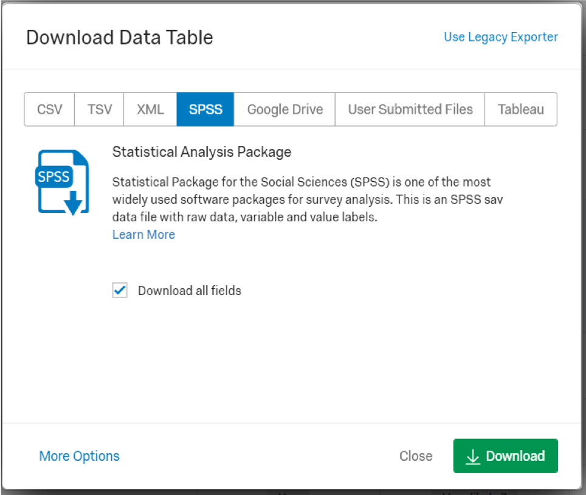
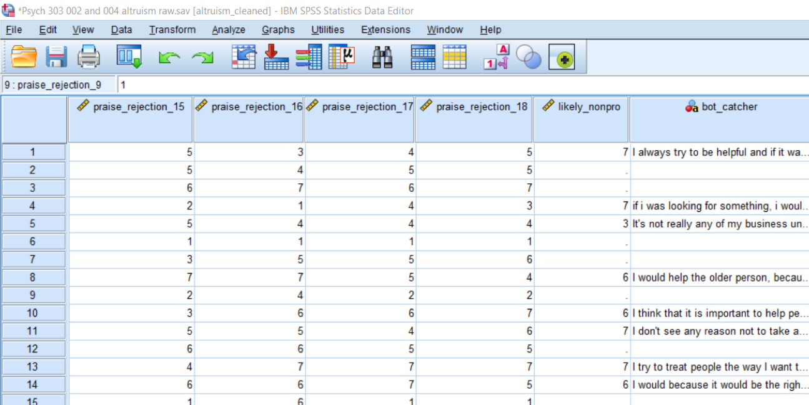
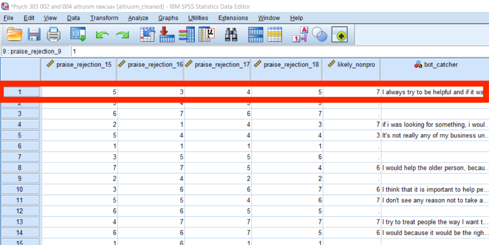
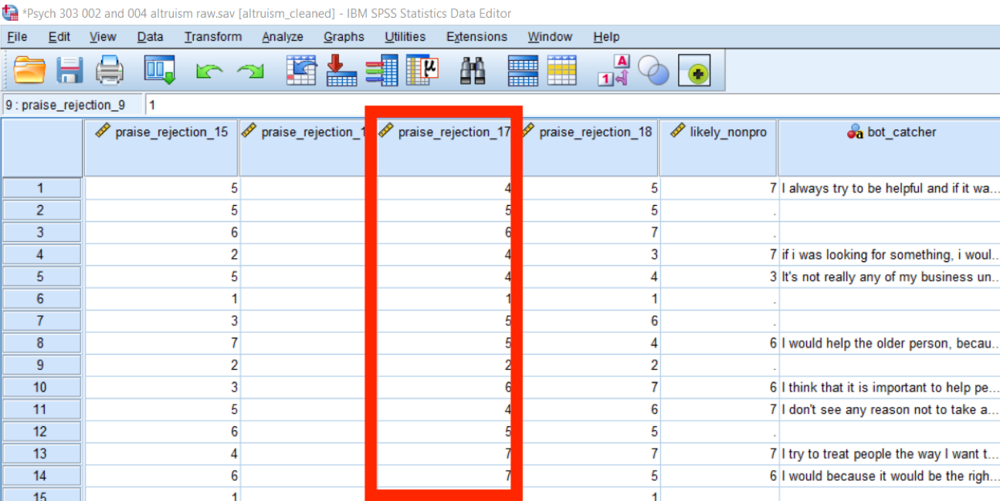
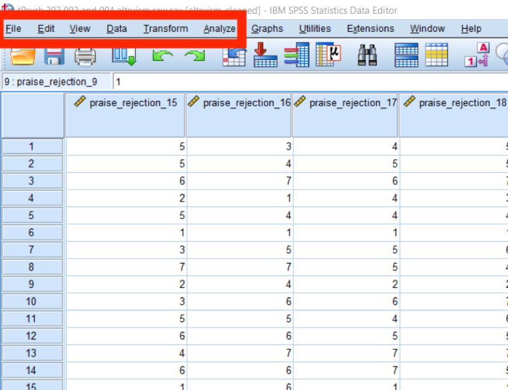
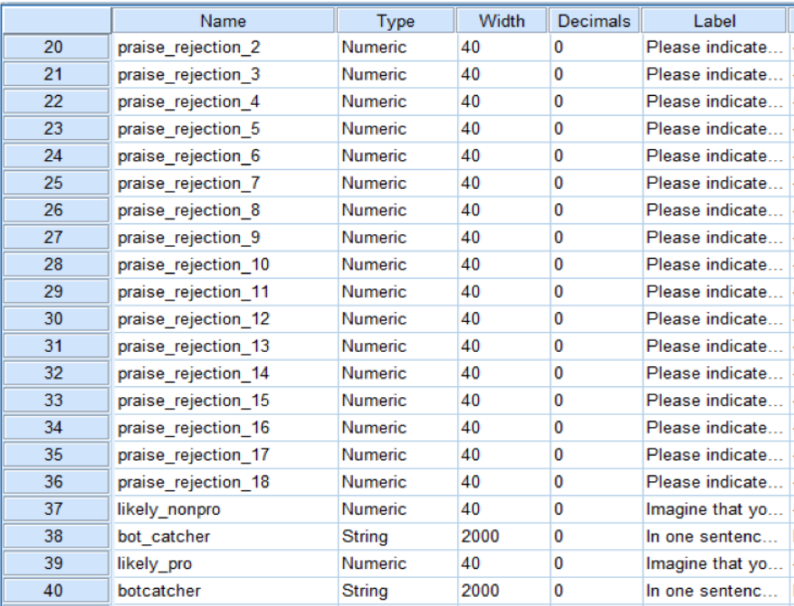
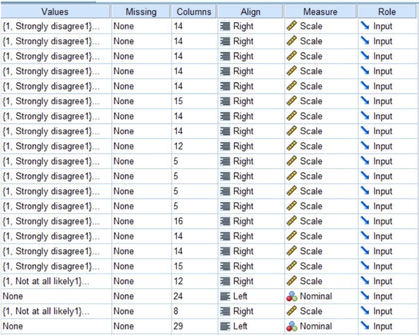

Setup
First, download your data from Qualtrics
Open your survey in Qualtrics and hit the "Data & Analysis" tab in the top menu bar:
Find the "Export and Import" dropdown menu above the data and select "Export Data..."
 Qualtrics allows us to download data specialized for analysis in SPSS. Choose this option and download the data.
In examples, this tutorial will use data from an informal Qualtrics experiment on altruistic behavior and the valuation of reputation. You can download the data here:
Download SPSS DataOrientation to Data in SPSS
Data View
Open up your data in SPSS. It should look like a spreadsheet.
Row Representation
Each row of your data contains all of the data an individual participant, whether collected automatically by Qualtrics or entered by the participant themselves:
Column Representation
Each column of your data contains all of the data (from every participant) for a particular variable.
Basic Commands
File
use to save, open, create new, and export files
Data
use to create filter variables or split output by group
Transform
use to create new variables, recode variables, compute new variables
Analyze
use to conduct descriptive and inferential statistics
Variable View
Name
What you've named the variable
Type
Tells you the type of data
numeric = numbers
string = words
Label
A description of what the variable is (e.g., “please indicate the extent to which…”
Values
Descriptions of the values a variable can take and what they mean
e.g. 0 = man, 1 = woman
Missing
How many people did not answer that question on your survey
Measures
Categorical, ordinal, or continuous variable
In SPSS:
nominal = categorical
scale = continuous